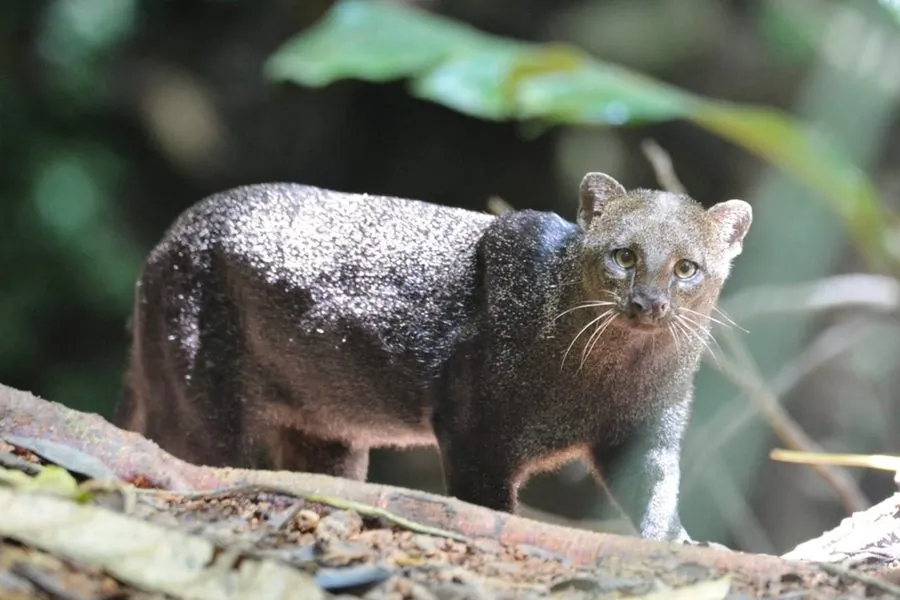

哺乳动物 · 动物界
细腰猫 Herpailurus yagouaroundi

美洲的细长型猫科，体形瘦长、尾巴长，毛色有灰、褐、黑三种色型，善游泳，常在白天活动，习性近似獴类。
- 分类
- 门脊索动物门纲哺乳纲目食肉目科猫科属细腰猫属
- 栖息环境
- 热带雨林、灌丛、草原、沼泽与河岸林地，偏好靠近水源
- 地理分布
- 中美洲和南美洲，从墨西哥到阿根廷中部
- 保护级别
- IUCN 无危（LC）
物种志
细腰猫体长 0.5–0.8 米，尾长 0.3–0.6 米，体重 3–9 kg，体形细长，是外形最独特的小型猫科之一。它的头部小而圆、耳朵短圆，身体和尾巴都很长，四肢相对短；毛色有灰色、红褐色和黑色三种色型，同一窝幼仔可能出现不同色型。
细腰猫分布于中美洲和南美洲，从墨西哥到阿根廷中部，栖息于热带雨林、灌丛、草原、沼泽和河岸林地，偏好靠近水源的环境。它与多数猫科不同，多在白天活动，善攀爬和游泳，捕食鼠类、鸟类、爬行动物、蛙类和鱼类，也吃果实；多独居，领地以气味标记。雌性妊娠期约 70–75 天，每胎 1–4 仔。细腰猫适应力较强，种群总体稳定，被列为无危。
形态与习性
- 食性鼠类、鸟类、爬行动物、蛙类与鱼类，也吃果实
- 体长0.5–0.8 m，尾长 0.3–0.6 m
- 体重3–9 kg
- 寿命野外约 10–12 年
- 繁殖妊娠期约 70–75 天，每胎 1–4 仔
- 毛色灰色、红褐色和黑色三种色型
- 活动节律多在白天活动
趣味知识
- 细腰猫的毛色有灰、红褐和黑色三种色型，同一窝幼仔也可能不同。
- 它体形细长、尾巴很长，外形与其他小型猫科明显不同。
- 细腰猫多在白天活动，这在猫科中并不常见。
- 它善攀爬和游泳，常在河岸林地捕食蛙类和鱼类。